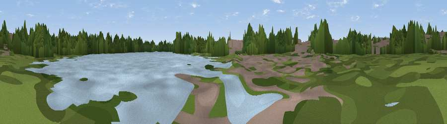

Viewpoint near Norton Canes
#45802 in England · top 93% of its area beats it · near Norton CanesWhere it is
The exact computed spot (SK 02616 08705). Click the marker for map links.
The view, rendered

A 360° render of this exact spot computed from the terrain model, tree cover and land cover — summer colours, afternoon light, calibrated against photographs of famous viewpoints. Real trees, hedges and buildings will differ in detail.
The panorama
Grey silhouette: terrain skyline in each direction (720 bearings, Earth curvature and refraction included). Dashed green: skyline with trees (+15 m) and buildings (+8 m) as obstacles. Blue strip: how far the ground is visible on each bearing.
Where the view opens
Wedge length = distance to the farthest visible ground on that bearing (vegetation-aware). Rings at 10, 25 and 50 km.
What fills the view
54% woodland · 22% built-up · 12% grassland · 10% water · 1% cropland
Angular shares of the visible panorama (visual magnitude), not map area. Landscape diversity 0.53 (0–1 Shannon).
Key numbers
More beautiful places nearby
The staircase of upgrades: each row has a higher view potential than everything closer. Driving times are estimates from straight-line distance, calibrated against real road routing — check an actual route before setting out.
| Place | Direction | Drive | Score |
|---|---|---|---|
| Viewpoint near Heath Hayes | WNW · 1 km | ~4 min | 44.7 |
| Wimblebury Hill | N · 3 km | ~7 min | 60.9 |
| Viewpoint near Streetly | SSE · 12 km | ~22 min | 69.5 |
| Viewpoint near Clent | SSW · 30 km | ~46 min | 73.8 |
| Viewpoint near Clent | SSW · 30 km | ~47 min | 74.3 |
| The Ercall | W · 38 km | ~57 min | 79.4 |
| Viewpoint near Little Wenlock | W · 39 km | ~58 min | 84.2 |
| The Wrekin | W · 40 km | ~59 min | 85.0 |
52.67604, -1.96275 · source: osm viewpoint · position refined by local search. Computed location — check access rights before visiting.